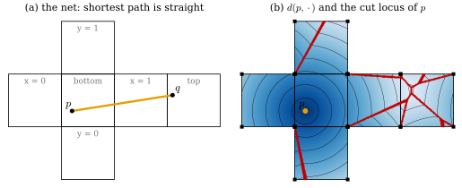
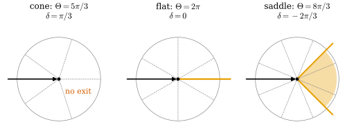
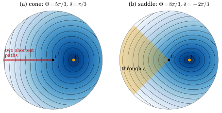
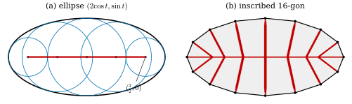
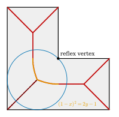

44.2 Discrete Shortest Paths, Cut Locus, and Medial Axis
Goals
- edge graph의 shortest path(Dijkstra)가 mesh를 세분해도 geodesic에 가까워지지 않는 이유를 정확한 식으로 설명할 수 있다.
- triangle을 평면에 펼쳐(unfolding) locally shortest path가 face와 edge에서 곧다는 것을 증명하고, cube 표면의 거리를 전개도로 계산할 수 있다.
- vertex의 angle defect에 따라 locally shortest path가 vertex를 지나지 못하는지(cone), 곧게 지나는지(flat), 여러 방향으로 지나는지(saddle) 증명할 수 있다.
- cut locus와 medial axis를 정의하고, polyhedral surface와 polygon에서는 그것이 모든 cone vertex와 convex vertex에 닿는다는 것을 보일 수 있다.
Prerequisites
- Section 44.1: locally shortest와 globally shortest, shortest 곡선은 geodesic이다(Corollary 44.1.10), boundary가 있는 영역의 shortest path(Example 44.1.4).
- angle defect Definition 40.1.1, vertex 둘레의 disk와 intrinsic distance Proposition 40.1.10, discrete local Gauss–Bonnet Corollary 40.2.9.
- “선분이 가장 짧다” Corollary 4.2.10. mesh의 vertex star와 link(Chapter 33).
Motivation
Section 44.1에서 shortest 곡선은 smooth surface에서 geodesic이었다(Corollary 44.1.10). 이제 surface가 triangle mesh라 하자. 두 점을 잇는 가장 짧은 path는 무엇이고, 어떻게 계산하는가? 이것은 boundary value problem이다. 끝점 둘을 주고 그 사이를 찾는다 [CMU-DDG L21–22] slide 20.
mesh 위의 거리는 Section 40.1에서 이미 썼다. 두 점 \(p, q \in \abs{\mathcal{K}}\)의 거리 \(d(p, q)\)는 \(\abs{\mathcal{K}}\) 안에서 \(p\)와 \(q\)를 잇는 path의 길이의 inf다(Proposition 40.1.10 앞의 정의). path는 edge 위로만 가지 않는다. face를 가로지를 수 있고, 그래야 짧아진다. 이 절은 먼저 edge 위로만 가는 shortest path가 왜 답이 아닌지 보고, face를 가로지르는 shortest path가 face와 edge와 vertex에서 어떻게 생겼는지 증명한다. 마지막으로 shortest path가 멈추는 곳, 곧 cut locus와 그 평면판인 medial axis를 본다.
Shortest Paths in the Edge Graph
가장 먼저 떠오르는 방법은 mesh의 edge를 weighted graph로 보고(weight는 edge의 길이) Dijkstra's algorithm으로 shortest path를 구하는 것이다. 이렇게 얻은 거리를 graph distance \(d_G\)라 하자. edge path는 \(\abs{\mathcal{K}}\) 위의 path이므로 언제나 \(d_G(i, j) \ge d(\mathbf{x}_i, \mathbf{x}_j)\)이다. 문제는 그 차이가 mesh를 세분해도 줄지 않는다는 것이다 [CMU-DDG L21–22] slide 20.
Proposition 44.2.1 (graph distance on a regular grid).
평면을 간격 \(h\)의 정사각형으로 나누고 모든 정사각형을 같은 방향 \((1, 1)\)의 대각선으로 자른 mesh(dgmesh.grid_mesh의 pattern="same")에서, vertex \(0\)에서 vertex \((ah, bh)\)(\(a, b \in \Z\))까지의 graph distance는
이다. 여기서 \(m = \min(\abs a, \abs b)\), \(M = \max(\abs a, \abs b)\)이다. 따라서 비 \(d_G/d\)는 방향 \((a, b)\)에만 의존하고 \(h\)에 무관하다.
Proof idea: 각 step이 어떤 linear function의 값을 자기 길이보다 많이 늘릴 수 없게 그 function을 고르면, 그 function의 값의 차가 길이의 lower bound가 된다.
Proof. mesh는 \(x \leftrightarrow y\)의 맞바꿈과 원점 대칭 \((x, y) \mapsto (-x, -y)\)에서 변하지 않으므로(대각선 방향 \((1, 1)\)이 보존된다) \(a \ge b \ge 0\) 또는 \(a \gt 0 \gt b\)의 경우만 보면 된다. edge path의 step은 \(\pm he_1\), \(\pm he_2\)(길이 \(h\))와 \(\pm h(e_1 + e_2)\)(길이 \(\sqrt2h\))이다. (i) \(a \ge b \ge 0\): \(y = (1, \sqrt2 - 1)\)이라 하면 여섯 step 각각에서 \(\inner{y}{\text{step}} \le \text{길이}\)이다(\(h\), \((\sqrt2 - 1)h\), \(\sqrt2h\)와 그 음수). 그러므로 어떤 path의 길이도 \(\inner{y}{(ah, bh)} = h(a + (\sqrt2 - 1)b)\), 곧 \(h(\sqrt2b + (a - b))\) 이상이다. 대각선 \(b\)번과 가로 \(a - b\)번이 이 길이를 이룬다. \(b \ge a \ge 0\)도 같다. (ii) \(a \gt 0 \gt b\): \(y = (1, -1)\)에서 \(\inner{y}{\pm h(e_1 + e_2)} = 0\), 나머지 step은 \(\pm h\)이므로 길이는 \(h(a - b)\) 이상이고, 가로와 세로 step으로 이것을 이룬다.
예를 들어 방향 \((1, 1)\)과 \((1, 0)\)에서는 \(d_G = d\)이지만 \((2, 1)\)에서는 \(d_G/d = (\sqrt2 + 1)/\sqrt5 = 1.0797\), \((1, -1)\)에서는 \(2/\sqrt2 = 1.4142\)이다. 세분은 \(h\)만 줄이므로 이 비는 그대로다. 이 오차를 metrication error(격자 오차)라 부른다. graph의 path는 정해진 몇 방향으로만 갈 수 있어서, 그 사이의 방향으로 가려면 계단을 밟아야 한다. surface mesh에서도 사정이 같다.
Dijkstra path를 출발점으로 쓸 수는 있다. path를 조금씩 곧게 펴는 일(필요하면 path가 지나는 face의 띠를 바꾸면서)을 더 줄어들지 않을 때까지 되풀이하면 locally shortest path를 얻는다(slide 20). 다만 그 결과는 처음 Dijkstra path 근처에서 찾은 것이므로 globally shortest라는 보장이 없다. 곧게 편 path가 어떻게 생겼는지가 다음 내용이다.
Unfolding
face 하나는 평평하다. edge 하나를 공유하는 두 face도, edge를 따라 접힌 종이를 펴듯 평면에 펼칠 수 있다. 이 unfolding이 mesh 위의 shortest path를 평면의 직선으로 바꾼다.
Lemma 44.2.2 (unfolding a strip of faces). face의 열 \(f_1, \dots, f_m\)에서 \(f_k\)와 \(f_{k+1}\)이 edge \(e_k\)를 공유한다고 하자(\(f_k \ne f_{k+1}\)). 그러면 평면의 triangle \(T_1, \dots, T_m\)이 있어 \(T_k\)는 \(f_k\)와 세 변의 길이가 같고, \(T_k\)와 \(T_{k+1}\)은 \(e_k\)에 대응하는 변을 공유하며 그 변의 서로 반대쪽에 있다. 이런 \(T_1, \dots, T_m\)은 평면의 rigid motion을 빼면 하나뿐이다. 각 \(f_k\)에서 \(T_k\)로 가는 isometry를 이어 붙인 map \(\Phi\)를 strip의 unfolding(펼침)이라 한다. \(e_1, \dots, e_{m-1}\)을 이 순서로 건너는 \(f_1\cup\cdots\cup f_m\) 안의 path \(c\)에 대하여 \(L(\Phi\circ c) = L(c)\)이다.
Proof. \(T_1\)은 세 변의 길이로 정해진다(law of cosines, rigid motion을 빼고). \(T_k\)까지 정했다면 \(T_{k+1}\)은 \(e_k\)의 image를 한 변으로 갖고, 남은 vertex는 \(e_k\)의 두 끝에서 정해진 거리에 있는 점이다. 두 원의 교점은 \(e_k\)의 양쪽에 하나씩 있고, \(T_k\)의 반대쪽을 고르면 \(T_{k+1}\)이 하나로 정해진다. 길이: \(c\)를 face마다 나누면 각 조각에서 \(\Phi\)는 isometry이므로 길이가 같고, 더하면 된다.
펼친 triangle들은 평면에서 서로 겹칠 수 있다(띠가 vertex를 여러 번 감는 경우). 그래도 연속한 두 triangle만 보면 언제나 edge의 양쪽에 놓인다. 이제 vertex를 지나지 않는 path를 보자.
Proposition 44.2.3 (locally shortest paths away from vertices). boundary가 없는 mesh 위의 path \(\gamma\)가 vertex를 지나지 않는다고 하자. \(\gamma\)가 locally shortest일 필요충분조건은 (i) 각 face 안에서 선분이고, (ii) edge를 건널 때마다 두 face를 펼치면(Lemma 44.2.2, \(m = 2\)) 들어오는 선분과 나가는 선분이 한 직선 위에 있는 것이다.
Proof. vertex가 아닌 점 \(y\)에는 평면의 disk처럼 보이는 neighborhood가 있다. \(y\)가 face의 안에 있으면 그 face, edge 위에 있으면 그 edge를 공유하는 두 face를 펼친 평면 사각형 \(Q\)를 생각하고, \(r \gt 0\)을 \(y\)에서 \(Q\)의 boundary까지의 거리보다 작게 잡는다. \(y\)에서 길이 \(r\) 미만인 path는 \(Q\)를 벗어날 수 없으므로 \(D_r := \{z : d(y, z) \lt r\}\) 안에서 거리는 펼친 평면의 Euclidean distance와 같다. (⇒) \(\gamma\)가 locally shortest이고 \(y = \gamma(t_0)\)이라 하자. \(t_0\)을 품은 작은 구간에서 \(\gamma\)는 그 끝점 사이의 shortest 곡선이고, 구간을 더 줄여 그 조각이 \(D_{r/2}\) 안에 있게 해도 된다(shortest 곡선의 부분은 shortest다). 그 조각은 펼친 평면에서 두 끝 \(a, b\)를 잇는 곡선이고 길이가 \(d(a, b) = \abs{a - b}\)이다. (선분 \(ab\)는 \(D_r\) 안에 있고, \(D_r\) 안의 path는 펼친 평면의 곡선이라 길이가 \(\abs{a - b}\) 이상이며(Corollary 4.2.10), \(D_r\)를 벗어나는 path는 길이가 \(2\cdot\tfrac r2 = r \gt \abs{a - b}\) 이상이다.) 그런데 조각 위의 어떤 점 \(w\)가 선분 \(ab\) 밖에 있으면 \(\abs{a - w} + \abs{w - b} \gt \abs{a - b}\)이고, Corollary 4.2.10을 \(a\)–\(w\)와 \(w\)–\(b\) 부분에 쓰면 조각의 길이가 \(\abs{a - b}\)보다 크다. 따라서 조각은 선분 \(ab\) 위에 있다. 곧 \(\gamma\)는 \(y\) 근처에서 펼친 평면의 선분이고, 이것이 (i)과 (ii)다. (⇐) \(y\)에서 \(\gamma\)가 곧다고 하고, \(y\)의 양쪽으로 거리 \(\varepsilon \lt r/2\)인 \(\gamma\) 위의 점 \(a, b\)를 잡자. \(\gamma\)의 \(a\)–\(b\) 부분은 펼친 평면의 선분이고 길이가 \(\abs{a - b} = 2\varepsilon\)이다. \(a, b\)를 잇는 path \(\beta\)는 \(D_r\) 안에 머물 때 펼친 평면의 곡선이 되어 길이가 \(\abs{a - b} = 2\varepsilon\) 이상이고(Corollary 4.2.10), \(D_r\)를 벗어나면 \(a\)에서 \(D_r\)의 boundary까지, boundary에서 \(b\)까지 각각 \(r - \varepsilon\) 이상을 가야 하므로 길이가 \(2(r - \varepsilon) \ge 2\varepsilon\) 이상이다. 곧 \(\gamma|_{[a, b]}\)는 shortest이고, \(\gamma\)는 \(y\) 근처에서 locally shortest이다.
이 명제와 Lemma 44.2.2를 합치면 계산법이 나온다. \(p\)에서 \(q\)로 가는 path가 건너는 edge의 순서를 하나 고르고 그 띠를 펼친다. 펼친 평면에서 \(p\)와 \(q\)의 image를 잇는 선분이 띠 안에 있으면(정해진 edge들을 그 순서로 건너면), 그 선분이 그 순서로 건너는 path 가운데 가장 짧다. 띠 안의 어떤 path도 펼치면 \(p\)에서 \(q\)로 가는 평면 곡선이기 때문이다. 전체의 shortest path는 모든 순서에 대한 최솟값이다. 단 vertex를 지나는 path는 따로 생각해야 하고, 그것이 아래 Proposition 44.2.5다.
Example 44.2.4 (the cube by unfolding).
unit cube \([0, 1]^3\)의 표면에서 바닥의 \(p = (0.2, 0.3, 0)\)과 뚜껑의 \(q = (0.9, 0.6, 1)\)의 거리를 구하자. cube의 face는 정사각형이지만 triangle 두 개로 나누어도 unfolding은 같다. 옆면 하나를 지나는 path는 네 가지다. 옆면 \(x = 1\)을 지나면 바닥과 뚜껑을 그 옆면의 평면으로 펼친 전개도(Figure 44.2.1(a))에서 \(p\)와 \(q\)가 \((0.2, 0.3)\)과 \((2.1, 0.6)\)에 놓이고, 선분은 두 공유 edge \(x = 1\), \(x = 2\)를 높이 \(0.426\)과 \(0.584\)에서 건넌다(둘 다 edge 안). 길이는 \(\sqrt{1.9^2 + 0.3^2} = 1.9235\)이다. 같은 계산으로 \(x = 0\), \(y = 0\), \(y = 1\)을 지나면 \(2.1213\), \(2.0248\), \(2.2136\)이다. 옆면 둘 이상을 지나는 순서까지 모두 펼쳐 비교해도(lib/ch44.py의 cube_distance, face 여섯 개까지의 순서) 최솟값은 \(1.9235\)이므로 \(d(p, q) = 1.9235\)이다. cube의 vertex는 모두 \(\delta = \pi/2 \gt 0\)이라 아래 Corollary 44.2.6에서 shortest path가 지나지 않으므로, vertex를 지나는 path는 볼 필요가 없다.
Verification: verify/v-44-2-shortest-paths-cut-locus.py

ch44.cube_distance_vec, cube의 vertex를 지나는 shortest path는 없다). 읽는 법: (a)의 정사각형 이름은 cube의 face이고, 뚜껑(top)은 \(x = 1\) 옆면의 오른쪽에 붙였다. 주황 선분이 shortest path다. (b)의 색은 \(d(p, \cdot)\)(진할수록 가깝다), 검은 선은 \(0.25\)마다의 등고선, 빨간 점은 cut locus(다른 두 unfolding이 주는 거리가 face 한 변의 \(1.2/120\)보다 덜 다른 표본점), 검은 작은 사각형은 전개도에 나타나는 cube의 corner를 모두 표시한 것이다. 한 corner가 전개도의 여러 곳에 나타난다. 볼 것: (a)의 path는 전개도 위에서 한 직선이고 길이 \(1.9235\)이다. (b)의 등고선은 face 사이를 꺾이지 않고 건너가지만 빨간 곡선에서는 꺾인다. 빨간 곡선은 cube의 corner 여덟 개를 모두 지난다. 한 corner의 사본 가운데 적어도 하나에 닿는다. 예를 들어 \((0, 0, 1)\)에는 top 정사각형의 오른쪽 아래 사본에서 닿고, \(y = 0\) 정사각형의 왼쪽 아래 사본에서는 닿지 않는다. 가장 먼 점의 거리는 \(2.045\)이다. 본문과의 연결: Example 44.2.4, Proposition 44.2.9, Example 44.2.10.Figure 44.2.1의 (a)를 보면 3차원에서는 두 번 꺾이는 path가 전개도에서는 한 직선이다. path가 꺾이는 것처럼 보이는 것은 \(\R^3\) 안에서 본 모습일 뿐이고, surface 안에서는 꺾이지 않는다. (b)는 \(p\)에서의 거리 전체다. 등고선이 \(p\)를 중심으로 원처럼 퍼지다가, 다른 방향으로 돌아온 두 파면이 만나는 곳에서 꺾인다. 그곳이 빨간 곡선이고, 아래의 cut locus다.
Paths Through Vertices
vertex에서는 star 전체를 한 평면에 펼칠 수 없다. 각의 합 \(\Theta_i\)가 \(2\pi\)가 아니기 때문이다. 그래서 locally shortest path가 vertex 근처에서 어떻게 생겼는지는 angle defect \(\delta_i = 2\pi - \Theta_i\)에 달려 있다 [CMU-DDG L21–22] slide 21.
interior vertex \(i\)를 지나는 path \(\gamma\)가 \(\mathbf{x}_i\)로 들어왔다가 나간다고 하자. 들어오는 방향과 나가는 방향은 \(\mathbf{x}_i\) 둘레의 각 \(\Theta_i\)를 둘로 나눈다. 진행 방향의 왼쪽에 있는 각의 합을 \(\theta_l\), 오른쪽을 \(\theta_r\)이라 하자. \(\theta_l + \theta_r = \Theta_i\)이고, 각은 face의 corner angle을 더해 잰다(한 face 안에서는 그 face의 평면의 각).
Proposition 44.2.5 (paths through a vertex). boundary가 없는 mesh의 vertex \(i\)와, \(\mathbf{x}_i\) 근처에서 \(\mathbf{x}_i\)로 들어오는 선분과 나가는 선분으로 된 path \(\gamma\)에 대하여, \(\gamma\)가 \(\mathbf{x}_i\)에서 locally shortest일 필요충분조건은
이다.
Proof idea: vertex 둘레를 polar coordinates \((r, \alpha)\)로 보면 star는 각 \(\Theta_i\)짜리 cone이다. 한쪽 각이 \(\pi\)보다 작으면 그쪽은 convex 부채꼴이라 현이 지름길이 되고, 두 쪽이 모두 \(\pi\) 이상이면 각을 줄여 평면의 half-plane으로 옮겨도 길이가 늘지 않으므로 vertex를 지나는 길이 가장 짧다.
Proof. \(h_i\)를 Proposition 40.1.10처럼 \(\mathbf{x}_i\)에서 link의 edge까지의 거리의 최솟값이라 하고 \(0 \lt \varepsilon \le h_i/2\)를 잡는다. 그 명제의 증명에서 open star 안의 점 \(y\)는 \(d(\mathbf{x}_i, y) = \abs{\mathbf{x}(y) - \mathbf{x}_i}\)이다. 각 face \(f \ni i\)를 \(\mathbf{x}_i\)를 중심으로 한 polar coordinates로 쓰고 face마다 각을 이어 붙이면, open star에서 \(\mathbf{x}_i\)를 뺀 부분은 \(\{(r, \alpha) : 0 \lt r \lt \rho(\alpha),\ \alpha \in \R/\Theta_i\Z\}\)이고 길이 요소는 \(dr^2 + r^2d\alpha^2\)이다. \(\gamma\) 위에서 \(\mathbf{x}_i\)로부터 거리 \(\varepsilon\)인 두 점을 \(a = (\varepsilon, 0)\), \(b = (\varepsilon, \theta_l)\)로 두자(\(\alpha\)를 왼쪽으로 잰다). \(\gamma\)의 \(a\)–\(b\) 부분의 길이는 \(2\varepsilon\)이다.
(⇒) \(\theta_l \lt \pi\)라 하자(\(\theta_r\)도 같다). 각 \(0 \le \alpha \le \theta_l\), \(r \le \varepsilon\)인 부분은 face들을 차례로 펼치면 평면의 각 \(\theta_l\)인 convex 부채꼴이다. 그 안의 현 \(ab\)는 surface 위의 path이고 길이가 \(2\varepsilon\sin(\theta_l/2) \lt 2\varepsilon\)이다. 곧 \(\gamma\)는 \(\mathbf{x}_i\)에서 locally shortest가 아니다.
(⇐) \(\theta_l, \theta_r \ge \pi\)라 하자. \(a\)에서 \(b\)로 가는 path \(\beta\)를 생각한다. (1) \(\beta\)가 open star를 벗어나면 link까지 갔다 와야 하므로 \(L(\beta) \ge 2(h_i - \varepsilon) \ge 2\varepsilon\)이다. (2) \(\beta\)가 \(\mathbf{x}_i\)를 지나면 \(L(\beta) \ge d(a, \mathbf{x}_i) + d(\mathbf{x}_i, b) = 2\varepsilon\)이다. (3) \(\beta\)가 open star 안에 있고 \(\mathbf{x}_i\)를 피하면 \((r(t), \alpha(t))\)로 쓸 수 있고 \(\alpha\)를 \(\R\) 값으로 연속하게 이어 잡을 수 있다(lift). 끝에서의 \(\alpha\)의 총변화 \(\Delta\)는 \(\theta_l + k\Theta_i\)(\(k \in \Z\)) 꼴이고, 이 값들은 모두 \(\abs\Delta \ge \min(\theta_l, \theta_r) \ge \pi\)이다(\(k = 0\)이면 \(\theta_l\), \(k = -1\)이면 \(-\theta_r\), 나머지는 더 크다). \(c = \pi/\abs\Delta \le 1\)로 두고 \(\Psi(r, \alpha) = r(\cos c\alpha, \sin c\alpha)\)로 평면에 옮기면 \(\abs{(\Psi\circ\beta)'}^2 = r'^2 + c^2r^2\alpha'^2\)이고 이것은 \(r'^2 + r^2\alpha'^2 = \abs{\beta'}^2\) 이하이므로 \(L(\Psi\circ\beta) \le L(\beta)\)이다. \(\Psi\circ\beta\)의 두 끝은 반지름 \(\varepsilon\)인 원 위에서 각 \(c\abs\Delta = \pi\)만큼 떨어진 점, 곧 지름의 양 끝이므로 Corollary 4.2.10에서 \(L(\Psi\circ\beta) \ge 2\varepsilon\)이다. 세 경우 모두 \(L(\beta) \ge 2\varepsilon\)이므로 \(\gamma|_{[a, b]}\)는 shortest다.
Corollary 44.2.6 (cone, flat, and saddle vertices). boundary가 없는 mesh의 interior vertex \(i\)에서
- (a) \(\delta_i \gt 0\)(cone vertex(원뿔 꼭짓점))이면 어떤 locally shortest path도 \(\mathbf{x}_i\)를 지나지 않는다.
- (b) \(\delta_i = 0\)이면 \(\mathbf{x}_i\)를 지나는 locally shortest path는 \(\theta_l = \theta_r = \pi\), 곧 곧게 지나는 것뿐이다.
- (c) \(\delta_i \lt 0\)(saddle vertex(안장 꼭짓점))이면 들어오는 방향 하나에 대해 나가는 방향이 \(\theta_l \in [\pi, \Theta_i - \pi]\), 곧 폭 \(-\delta_i\)의 구간만큼 있고, 그 모두가 locally shortest이다.
Proof. 먼저 \(\mathbf{x}_i\)를 지나는 locally shortest path는 \(\mathbf{x}_i\) 근처에서 들어오는 선분과 나가는 선분으로 되어 있다. \(\mathbf{x}_i\)를 뺀 open star 안에서 path는 face와 edge에서 곧으므로(Proposition 44.2.3), Proposition 44.2.5의 증명의 polar coordinates \((r, \alpha)\)(\(\alpha \in \R\)로 이어 잡은 것)를 평면에 \(r(\cos\alpha, \sin\alpha)\)로 옮기면 한 직선의 일부가 되고, 원점(\(\mathbf{x}_i\))에 닿는 직선은 원점을 지나는 직선, 곧 반지름 방향의 선분이기 때문이다. 그러므로 Proposition 44.2.5를 쓸 수 있다. (44.2.2)는 \(\pi \le \theta_l \le \Theta_i - \pi\)와 같다. 이 구간은 \(\Theta_i \lt 2\pi\)이면 비어 있고, \(\Theta_i = 2\pi\)이면 한 점 \(\pi\)이며, \(\Theta_i \gt 2\pi\)이면 길이 \(\Theta_i - 2\pi = -\delta_i\)이다.

ch44.equilateral_star(m))의 vertex. \(m = 5\)는 cone(\(\Theta = 5\pi/3\), \(\delta = \pi/3\)), \(m = 6\)은 평면, \(m = 8\)은 saddle(\(\Theta = 8\pi/3\), \(\delta = -2\pi/3\))이다. 읽는 법: vertex에서의 방향을 원 위에 그렸다. intrinsic 각 \(\alpha \in [0, \Theta)\)를 그림의 각 \(2\pi\alpha/\Theta\)로 바꾸었으므로 각은 \(\Theta\)에 대한 비율로 정확하고 유클리드 각은 아니다(schematic). 회색 점선은 star의 edge, 검은 화살표는 들어오는 path, 주황은 (44.2.2)를 만족하는 나가는 방향이다. 볼 것: cone에서는 어느 방향으로 나가도 한쪽 각이 \(\pi\)보다 작아 나갈 방향이 없다. 평면에서는 정반대 방향 하나다. saddle에서는 폭 \(2\pi/3 = -\delta\)인 부채꼴(\(\Theta\)의 \(1/4\)) 전체가 허용된다. 본문과의 연결: Proposition 44.2.5, Corollary 44.2.6.Figure 44.2.2의 세 그림은 같은 질문, “들어온 path를 어디로 내보내야 양쪽 각이 모두 \(\pi\) 이상인가”에 대한 답이다. 왼쪽에서는 전체 각 \(5\pi/3\)을 둘로 나누면 한쪽이 \(5\pi/6 \lt \pi\) 이하가 되므로 답이 없다. path는 vertex를 지나는 대신 한쪽으로 돌아가는 편이 언제나 짧다. 오른쪽에서는 각이 남는다. 남는 \(2\pi/3\)만큼의 방향 어디로 나가도 양쪽 각이 \(\pi\) 이상이다.
smooth surface에서는 한 점 \(p\)에서 나가는 두 minimal geodesic은 한쪽이 다른 쪽의 일부가 아닌 한 \(p\) 밖에서 만나지 않는다(만나는 점까지의 두 path를 바꾸어 붙이면 꺾인 shortest 곡선이 생기기 때문이다. 받아들이는 사실, Section 23.5) [CMU-DDG L21–22] slide 23. mesh에서는 이것이 깨진다. saddle vertex 뒤쪽의 점들로 가는 shortest path는 모두 그 vertex를 지나므로, 그 vertex가 새로운 출발점처럼 행동한다. 이런 vertex를 pseudo-source(가짜 원천)라 부른다. 다음 그림이 하나의 vertex만 가진 polyhedral cone 위에서 이것을 정확히 계산한다.

ch44.cone_distance). 읽는 법: 그림의 각은 intrinsic 각 \(\alpha\)를 \(2\pi\alpha/\Theta\)로 바꾼 것이고(schematic), 반지름은 정확하다. 색과 검은 선(\(0.25\)마다)이 \(d(p, \cdot)\)이다. 빨간 반직선은 shortest path가 둘인 점, 주황 부채꼴은 shortest path가 \(v\)를 지나는 점이다. 볼 것: (a)에서는 \(p\)의 반대쪽(\(\alpha = \Theta/2\))에서 양쪽으로 돈 두 path의 길이가 같고 등고선이 꺾인다. \(v\)를 지나는 shortest path는 없다. (b)에서는 \(p\)의 반대쪽에 폭 \(-\delta = 2\pi/3\)(그림에서는 원의 \(1/4\))의 부채꼴이 생기고, 그 안의 거리는 \(1 + d(v, \cdot)\)이라 등고선이 \(v\)를 중심으로 한 원이다. 본문과의 연결: Corollary 44.2.6, pseudo-source, Proposition 44.2.9.Figure 44.2.3의 (b)에서 주황 부채꼴의 boundary를 보자. boundary에서 \(p\)와 점 사이의 각의 차가 정확히 \(\pi\)이고, 펼친 직선이 \(v\)를 지난다. 부채꼴 안에서는 펼친 직선이 존재하지 않고(어느 쪽으로 돌아도 각이 \(\pi\)를 넘는다), shortest path는 \(v\)까지 간 다음 거기서 다시 직선으로 나간다. 부채꼴 안의 등고선이 \(v\)를 중심으로 한 원인 것은 \(v\)가 두 번째 출발점처럼 행동한다는 뜻이다. (a)의 빨간 반직선은 반대 현상이다. cone vertex 뒤에서는 양쪽으로 돌아온 두 파면이 만나 꺾인다.
Algorithms for Exact and Approximate Distance
정확한 polyhedral distance를 계산하는 고전적인 algorithm은 MMP다 [Mitchell87]. Dijkstra처럼 출발점에서 가까운 순서로 진행하되, vertex가 아니라 edge 위의 구간(window)을 전파한다. window는 “출발점의 펼친 image에서 보이는 edge의 구간”과 그 image의 위치를 기억하고, 다음 face를 펼칠 때마다 쪼개진다. saddle vertex에 닿은 window는 그 vertex를 새 출발점(pseudo-source)으로 하는 window를 만든다(Corollary 44.2.6(c)). 강의 슬라이드는 이 algorithm의 시간을 \(O(n^2\log n)\)으로 적고, 그 뒤의 개선(window 가지치기, 근사)도 같은 점근 복잡도라고 설명한다 [CMU-DDG L21–22] slide 22. 이 study set은 MMP를 구현하지 않는다. cube처럼 convex polyhedron에서는 pseudo-source가 없으므로, unfolding의 순서를 window와 함께 모두 따라가는 lib/ch44.py의 cube_distance가 MMP와 같은 값을 준다(Example 44.2.4).
근사 방법으로는 fast marching이 대표적이다 [Kimmel98]. distance function이 만족하는 eikonal equation \(\abs{\grad\varphi} = 1\)을 triangle마다 upwind 방식으로 풀며, Dijkstra처럼 heap에서 가장 가까운 vertex를 차례로 확정한다. 확정하는 순서가 거리에 의존하므로 계산이 순차적이다. 같은 eikonal equation을 linear system 두 개로 바꾸는 방법이 Section 44.6의 heat method다.
Closed Geodesics
smooth surface에서는 closed geodesic이 많다. sphere와 topology가 같은 모든 smooth convex surface에는 스스로 만나지 않는 closed geodesic이 적어도 셋 있다(Lusternik–Schnirelmann, 슬라이드에 진술만 있다) [CMU-DDG L21–22] slides 24–25. 슬라이드는 Galperin의 정리로, convex polyhedron은 대부분 스스로 만나지 않는 shortest 판의 closed geodesic을 갖지 않는다는 결과도 소개한다(진술만 있다). 그 이유가 discrete Gauss–Bonnet theorem에 있다.
Remark 44.2.7 (closed geodesics need a defect of exactly \(2\pi\) on each side). 모든 vertex가 cone vertex인 sphere topology의 mesh(convex polyhedron이 그 예다) 위의 스스로 만나지 않는 닫힌 path \(\gamma\)가 모든 점에서 locally shortest라 하자. Corollary 44.2.6(a)에서 \(\gamma\)는 vertex를 지나지 않고, Proposition 44.2.3에서 face와 edge에서 곧다. \(\gamma\)는 surface를 두 disk로 나눈다. \(\gamma\)를 따라 face를 잘라 다시 triangulate하면 \(\gamma\)는 새 mesh의 edge가 되고, \(\gamma\) 위의 새 vertex는 한쪽 disk에서 각의 합이 \(\pi\)(곧은 점)이므로 boundary의 꺾임 \(\tau = \pi - \pi = 0\)이다. discrete local Gauss–Bonnet(Corollary 40.2.9)에서 각 disk 안의 vertex의 angle defect의 합은 \(2\pi - 0 = 2\pi\)이다. vertex의 angle defect들을 두 묶음으로 나누어 각각 정확히 \(2\pi\)가 되게 할 수 없는 polyhedron에는 그런 closed geodesic이 없다. 예: unit cube의 높이 \(1/2\)인 띠는 아래위로 corner 넷씩, \(4\cdot\tfrac\pi2 = 2\pi\)으로 나누므로 closed geodesic이 된다. regular tetrahedron은 vertex 둘씩(\(\pi + \pi\))으로 나눌 수 있다(Exercise 44.2.5). (자르고 다시 triangulate하는 단계는 여기서 자세히 쓰지 않았다. 그 단계는 Section 44.3의 Theorem 44.3.9의 증명에서 한다. 이 셈은 그 정리의 첫 식에서 \(\gamma\) 위의 모든 점이 \(\theta_l = \pi\)인 경우다.)
Cut Locus and Injectivity Radius
출발점 \(p\)에서 나간 shortest path는 어디까지 shortest로 남는가? Figure 44.2.1(b)의 빨간 곡선이 그 boundary다. 강의 슬라이드는 \(p\)와의 shortest path가 하나가 아닌 점들의 집합으로 설명한다(slide 26). 이 절에서는 polyhedral surface에서도 쓰기 좋은 다음 판을 쓴다.
Remark 44.2.8 (cut points in this section). boundary가 없는 connected surface(smooth 또는 polyhedral) 위의 점 \(p\)와 \(q \ne p\)에 대하여, \(p\)에서 나가 \(q\)를 지나 더 멀리 가는 shortest path가 없으면, 곧 \(q\)가 \(p\)에서 나간 어떤 shortest path의 안쪽 점도 아니면 \(q\)를 \(p\)의 cut point(절단점)라 하자. cut point 전체를 \(p\)의 cut locus(절단 자취) \(\operatorname{Cut}(p)\)라 하고, \(\inj(p) := d(p, \operatorname{Cut}(p))\)를 \(p\)의 injectivity radius(단사반지름)라 한다. Riemannian geometry에서는 \(p\)에서 나간 geodesic이 minimizing을 멈추는 점을 그 geodesic을 따른 cut point라 하고, 그런 점 전체를 cut locus로 둔다 [Lee-IRM Ch. 10, p. 308](Track 3의 Section 23.5, \(\inj\)는 Notation). connected이고 complete인 smooth surface에서는 두 판이 같은 점들을 주고, shortest path가 둘 이상인 점은 언제나 cut point다(slide 26의 판). unit sphere에서 \(\operatorname{Cut}(p) = \{-p\}\)이고 \(\inj(p) = \pi\)이다(Section 0.8).
vertex가 아닌 점 \(q\)에 shortest path가 둘(\(\gamma_1 \ne \gamma_2\)) 있으면 \(q\)는 이 판의 cut point다. 어떤 shortest path \(\gamma\)가 \(q\)를 지나 \(q'\)까지 간다면, \(\gamma_1\)과 \(\gamma_2\) 뒤에 \(\gamma\)의 \(q\)–\(q'\) 부분을 붙인 두 path도 \(q'\)까지의 shortest path인데, 둘 가운데 적어도 하나는 \(q\)에서 꺾인다(두 path가 \(q\)로 들어오는 방향이 다르고 나가는 방향은 같다). 꺾인 path는 Proposition 44.2.3에서 locally shortest가 아니므로 모순이다.
Proposition 44.2.9 (cone vertices are cut points). boundary가 없는 mesh의 점 \(p\)와 cone vertex \(i\)(\(\delta_i \gt 0\), \(\mathbf{x}_i \ne p\))에 대하여 \(\mathbf{x}_i \in \operatorname{Cut}(p)\)이다. 따라서 \(\inj(p)\)는 \(p\)에서 가장 가까운 cone vertex까지의 거리 이하다.
Proof. \(p\)에서 나간 shortest path가 \(\mathbf{x}_i\)를 안쪽 점으로 지난다면 그 path는 \(\mathbf{x}_i\)에서 locally shortest인데(shortest path의 부분은 shortest), Corollary 44.2.6(a)에서 그런 path는 없다. 둘째 문장은 \(\inj\)의 정의다.
Example 44.2.10 (cut loci of the icosphere and the cube). (a) icosphere(\(\ell\))는 vertex가 unit sphere 위에 있는 convex polyhedron이라 모든 vertex가 \(\delta_i \gt 0\)이다(icosphere(3)의 한 vertex에서 \(\delta = 0.0196\)). 따라서 어느 \(p\)에서나 \(\operatorname{Cut}(p)\)는 다른 모든 vertex를 포함하고, \(\inj(p)\)는 가장 가까운 vertex까지의 거리 이하다. vertex \(p\)에서는 이웃 vertex까지의 edge가 shortest이므로(edge는 \(\R^3\)의 선분이고 intrinsic distance는 Euclidean distance 이상이다) \(\inj(p)\)는 가장 짧은 이웃 edge 이하, icosphere(3)의 북극에 가장 가까운 vertex에서 \(0.1383\) 이하다. smooth sphere의 \(\inj = \pi\)와 전혀 다르고, 세분할수록 오히려 작아진다. (b) cube의 \(p = (0.2, 0.3, 0)\)에서 cut locus는 Figure 44.2.1(b)의 빨간 곡선이고 corner 여덟 개를 모두 지난다. 가장 가까운 corner는 \((0, 0, 0)\)으로 거리 \(\sqrt{0.13} = 0.3606\)이고, 표본에서 찾은 cut point의 최소 거리도 \(0.362\)이므로 \(\inj(p) \approx 0.3606\)이다.
Verification: verify/v-44-2-shortest-paths-cut-locus.py
The Medial Axis
cut locus는 한 점에서 나가는 파면이 스스로 만나는 곳이다. 출발점을 점 대신 영역의 boundary로 바꾸면 같은 생각이 평면 영역의 “뼈대”를 준다 [CMU-DDG L21–22] slide 28. boundary에 동시에 불을 붙이면 불이 안쪽으로 같은 속도로 번지고, 서로 다른 쪽에서 온 불이 만나는 곳이 남는다.
Definition 44.2.11 (medial axis). \(\Omega \subseteq \R^2\)가 compact이고 boundary \(\partial\Omega\)가 piecewise smooth한 영역이라 하자. \(\Omega\)의 interior의 점 \(p\) 가운데 \(\partial\Omega\) 위의 가장 가까운 점이 둘 이상인 점들의 집합
를 \(\Omega\)의 medial axis(중심축)라 한다. \(p \in \mathcal{M}(\Omega)\)를 중심으로 하고 반지름이 \(r(p) := \operatorname{dist}(p, \partial\Omega)\)인 disk를 medial ball(중심축 원판), \(r\)을 radius function(반지름 함수)이라 한다.
반지름 \(R\)인 disk에서는 중심만 boundary의 모든 점과 같은 거리에 있으므로 \(\mathcal{M}\)은 중심 한 점이다. disk의 다른 점은 중심에서 그 점을 지나는 반직선이 원과 만나는 점 하나가 가장 가깝다. 정의를 \(\operatorname{int}\Omega\)로 제한한 것은 boundary 위의 점이 자기 자신을 유일한 가장 가까운 점으로 갖기 때문이다. medial axis의 closure를 \(\mathcal{M}\)이라 부르는 문헌도 있다. 그 차이는 아래 예의 끝점(ellipse의 \((\pm\tfrac32, 0)\), polygon의 convex vertex)이 들어가는지다.
Proposition 44.2.12 (rectangles). \(R = [-a, a]\times[-b, b]\)(\(a \ge b \gt 0\))의 medial axis는 선분 \(\{(x, 0) : \abs x \le a - b\}\)와, 그 양 끝 \((\pm(a - b), 0)\)에서 네 corner로 가는 열린 선분 네 개의 합집합이다. \(a = b\)(정사각형)이면 두 대각선(끝점 제외)이다.
Proof. interior의 점 \(p = (x, y)\)에서 네 변까지의 거리는 \(a - x\), \(a + x\), \(b - y\), \(b + y\)이고, 각 변 위의 가장 가까운 점은 수선의 발 하나다. 따라서 가장 가까운 점이 둘 이상인 것은 네 수 가운데 최솟값이 둘 이상의 변에서 나올 때다. (i) 위아래 두 변이 최소를 함께 이루려면 \(y = 0\)이고 \(b \le a - \abs x\), 곧 \(\abs x \le a - b\)이다. (ii) 좌우 두 변이 함께 최소이려면 \(x = 0\), \(a \le b - \abs y\)이어야 하므로 \(a = b\), \(p = 0\)일 때뿐이다. (iii) 세로 변 하나와 가로 변 하나가 함께 최소이면 \(a - \abs x = b - \abs y \le\) 나머지 둘이다. 이것은 \(\abs x - \abs y = a - b\), \(\abs y \le b\)인 점들로, 대칭을 쓰면 \(x, y \ge 0\)에서 \((a - b, 0)\)과 corner \((a, b)\)를 잇는 선분이다. (corner는 interior가 아니므로 뺀다.) 셋을 합치면 주장이다.
Proposition 44.2.13 (the ellipse). running example의 ellipse \((2\cos t, \sin t)\)가 둘러싼 영역의 medial axis는 열린 선분 \(\{(x, 0) : \abs x \lt \tfrac32\}\)이다. 끝점 \((\tfrac32, 0)\)에서 radius function은 \(\tfrac12\)이고, 그 medial ball은 vertex \((2, 0)\)에서의 osculating circle이다.
Proof idea: boundary까지의 거리의 제곱을 \(c = \cos t\)의 함수로 쓰면 convex function이 된다. 최솟점이 하나인 \(c\)가 \(\sin t\)의 부호 둘에 대응하는지가 갈림길이다.
Proof. \(p = (x, y)\)가 영역의 interior에 있다고 하자. (i) \(y = 0\)이면 \(\abs{(2\cos t, \sin t) - (x, 0)}^2\)은 \(c = \cos t \in [-1, 1]\)의 함수 \(3c^2 - 4xc + x^2 + 1\)이다. 이 2차식의 최솟점은 \(c^* = 2x/3\)이고, \(\abs x \lt \tfrac32\)이면 \(c^* \in (-1, 1)\)이라 \(t = \pm\arccos c^*\), 곧 서로 다른 두 점에서 최소다. \(\tfrac32 \le \abs x \lt 2\)이면 \([-1, 1]\) 위의 최솟점은 끝 \(c = \operatorname{sgn}x\)뿐이므로 가장 가까운 점은 vertex \((\pm2, 0)\) 하나다. (ii) \(y \gt 0\)이면 아래 반쪽의 점 \((2c, -s)\)(\(s \gt 0\))는 그것을 뒤집은 \((2c, s)\)보다 엄밀히 멀다(거리의 제곱의 차가 \(4sy \gt 0\)). 그래서 가장 가까운 점은 닫힌 위 반쪽 \(s = \sqrt{1 - c^2} \ge 0\)에만 있다. 그곳에서 거리의 제곱은 \(g(c) = 3c^2 - 4xc - 2y\sqrt{1 - c^2} + x^2 + y^2 + 1\)이다. \(3c^2\)는 strictly convex, \(-2y\sqrt{1 - c^2}\)는 \(y \gt 0\)에서 convex이므로 \(g\)는 \([-1, 1]\)에서 strictly convex이고 최솟점이 하나다. 곧 가장 가까운 점이 하나다. \(y \lt 0\)은 대칭이다. 끝점에서의 반지름: \(x = \tfrac32\)이면 \(c^* = 1\)이고 거리의 제곱이 \(3 - 6 + \tfrac94 + 1 = \tfrac14\)이다. ellipse의 vertex \((2, 0)\)에서 curvature는 \(a/b^2 = 2\)(Chapter 4의 공식, verify)이므로 osculating circle의 반지름이 \(\tfrac12\)이고 중심이 \((\tfrac32, 0)\)이다.
ellipse의 medial axis는 boundary에 닿지 않는다. 끝점은 boundary에서 가장 많이 휜 곳의 center of curvature에서 멈춘다. 이제 같은 ellipse를 polygon으로 근사해 보자.

ch44.polygon_medial_samples). 읽는 법: (a)의 파란 원의 반지름은 radius function \(r(x, 0) = \sqrt{1 - x^2/3}\)이다. (b)의 회색이 polygon이고 검은 점이 vertex이다. 볼 것: (a)의 medial axis는 \(\abs x \lt 1.5\)에서 멈추고, 끝의 원(반지름 \(0.5\))은 vertex \((2, 0)\)의 osculating circle이다. (b)에서는 가운데 선이 vertex \((\pm2, 0)\)까지 가고, 모든 vertex로 가지가 뻗는다. polygon이 ellipse에 아무리 가까워도 가지의 수는 vertex의 수다. 본문과의 연결: Proposition 44.2.13, Proposition 44.2.14.Figure 44.2.4의 두 그림은 같은 모양의 거의 같은 boundary인데 medial axis가 전혀 다르다. (b)의 가지는 convex vertex마다 생긴다. polygon의 변 위에서는 curvature가 \(0\)이고 vertex에 curvature가 몰려 있으므로, “가장 많이 휜 곳에서 멈춘다”는 smooth의 규칙이 모든 vertex에서 “boundary까지 간다”가 된다. cut locus가 모든 cone vertex를 지나는 것과 같은 현상이다.
Proposition 44.2.14 (convex vertices touch the medial axis). simple polygon \(\Omega\)의 vertex \(v\)에서 내각이 \(\alpha \lt \pi\)이면 \(v\)는 \(\mathcal{M}(\Omega)\)의 closure에 속한다.
Proof. \(v\)에서 만나는 두 변을 \(e_1, e_2\)라 하고, \(v\)에서 interior angle bisector를 따라 \(\Omega\) 안으로 거리 \(\rho\)만큼 간 점을 \(p_\rho\)라 하자. \(p_\rho\)에서 \(e_1, e_2\)를 품은 직선까지의 거리는 모두 \(\rho\sin(\alpha/2)\)이고, 수선의 발은 \(v\)에서 각 변을 따라 \(\rho\cos(\alpha/2)\)인 점이다. \(\rho\)가 작으면 두 발은 각 변의 안에 있고, 나머지 변들은 \(v\)에서 양의 거리만큼 떨어져 있으므로 \(p_\rho\)에서 더 멀다. 따라서 \(p_\rho\)에서 가장 가까운 boundary 점은 서로 다른 두 발이고, \(p_\rho \in \mathcal{M}(\Omega)\)이다. \(\rho \to 0\)이면 \(p_\rho \to v\)이다.
Example 44.2.15 (an L-shaped polygon). \(\Omega = [0, 2]^2 \setminus (1, 2]\times(1, 2]\)는 \((1, 1)\)에 reflex vertex(내각 \(3\pi/2\))를 갖는다. \(x, y \le 1\)인 점에서 가장 가까운 점은 바닥 변 \(y = 0\)(거리 \(y\)), 왼쪽 변 \(x = 0\)(거리 \(x\)), 또는 reflex vertex(거리 \(\sqrt{(1 - x)^2 + (1 - y)^2}\))이다. 바닥 변과 vertex가 같은 거리인 점은 \(y^2 = (1 - x)^2 + (1 - y)^2\), 곧
\[ (1 - x)^2 = 2y - 1 \]
인 포물선 위에 있다. 이 포물선의 조각(\(2 - \sqrt2 \le x \le 1\))과 \(x, y\)를 바꾼 조각, 그리고 \((0, 0)\)에서 나오는 대각선 \(y = x\)가 \((2 - \sqrt2, 2 - \sqrt2)\)에서 만난다(Figure 44.2.5). 만나는 점의 medial ball은 반지름 \(2 - \sqrt2 = 0.5858\)이고 바닥 변, 왼쪽 변, reflex vertex에 동시에 닿는다. polygon인데도 medial axis가 직선만으로 이루어지지 않는다. reflex vertex는 점이므로, 점과 직선에서 같은 거리인 점들, 곧 포물선이 생긴다 [CMU-DDG L21–22] slide 29.
Verification: verify/v-44-2-shortest-paths-cut-locus.py

Figure 44.2.5에서 convex corner(내각 \(\pi/2\))에는 가지가 닿고 reflex vertex에는 닿지 않는 것을 확인하자. reflex vertex 근처의 점은 vertex 자체를 가장 가까운 점으로 하나만 갖기 때문이다. cut locus에서 cone vertex는 닿고 saddle vertex는 pseudo-source가 되는 것과 같은 짝이다.
Remark 44.2.16 (recovering the shape from medial balls). medial axis와 radius function을 알면 모양을 되찾을 수 있다. 위의 예들에서 \(\Omega\)는 \(\overline{\mathcal{M}(\Omega)}\) 위의 closed medial ball들의 합집합이다(slide 28).
Proof sketch. \(x \in \operatorname{int}\Omega\)의 가장 가까운 boundary 점을 \(y\)라 하고 \(y\)에서 \(x\)를 지나는 반직선을 따라 중심을 옮기면, \(y\)에서 boundary에 닿는 disk가 \(\Omega\) 안에 머무는 동안 커진다. 더 커질 수 없게 되는 중심에서는 boundary의 다른 점에 닿거나(그 중심이 \(\mathcal{M}\)에 있다) boundary의 curvature 원과 같아지며(그 중심이 \(\overline{\mathcal{M}}\)에 있다), 그 disk가 \(x\)를 품는다. 일반적인 영역에서의 정확한 진술과 증명은 생략한다.
Summary
- edge graph의 shortest path는 정해진 방향으로만 가므로 그 사이 방향에서 비가 \(1\)이 아닌 상수로 남는다(Proposition 44.2.1, metrication error). 세분해도 줄지 않는다.
- locally shortest path는 face에서 선분이고, edge에서 두 face를 펼치면 곧다(Proposition 44.2.3). 띠를 펼친 전개도의 선분이 그 띠 안의 shortest path다(cube, Example 44.2.4).
- vertex를 지나는 path는 양쪽 각이 모두 \(\pi\) 이상일 때만 locally shortest다((44.2.2)). cone vertex는 지나지 않고, flat vertex는 곧게 지나고, saddle vertex는 폭 \(-\delta_i\)의 방향으로 지나며 pseudo-source가 된다.
- cut locus는 모든 cone vertex를 포함하고(Proposition 44.2.9), injectivity radius는 가장 가까운 cone vertex까지의 거리 이하다.
- medial axis는 boundary까지 가장 가까운 점이 둘 이상인 점들이다(Definition 44.2.11). ellipse에서는 center of curvature에서 멈추지만 polygon에서는 모든 convex vertex에 닿고, reflex vertex는 포물선을 만든다.
다음 절에서는 반대쪽 출발점, straightest를 택한다. 한 점과 방향에서 출발해 꺾이지 않고 나아가는 곡선은 vertex에서 어떻게 계속해야 하는가? 각을 양쪽으로 같게 나누는 규칙이 답이고, 그 규칙은 cone과 saddle에서 shortest와 어긋난다.
Exercises
Exercise 44.2.1 ★ Proposition 44.2.1의 grid(간격 \(h\))에서 원점에서 \((3h, -2h)\)와 \((2h, 5h)\)까지의 graph distance와 Euclidean distance의 비를 구하여라. 이 grid의 graph distance가 Euclidean distance와 같은 방향은 어떤 것인가?
Solution
\((3, -2)\): \(ab \lt 0\)이므로 \(d_G = 5h\), \(d = \sqrt{13}h\), 비 \(5/\sqrt{13} = 1.3868\)이다. \((2, 5)\): \(d_G = h(2\sqrt2 + 3) = 5.8284h\), \(d = \sqrt{29}h = 5.3852h\), 비 \(1.0823\)이다. (44.2.1)에서 등호는 \(\sqrt2\,m + (M - m)\)이 \(\sqrt{a^2 + b^2} = \sqrt{m^2 + M^2}\)와 같을 때다(\(ab \ge 0\)). 양변을 제곱해 정리하면 \(2(\sqrt2 - 1)\,m(M - m) = 0\)이 되어 \(m = 0\)이거나 \(m = M\), 곧 \(a = 0\), \(b = 0\), \(a = b\)(\(ab \ge 0\)이므로)일 때뿐이다. \(ab \lt 0\)이면 \(\abs a + \abs b \gt \sqrt{a^2 + b^2}\)이다. 곧 edge의 방향 \((1, 0)\), \((0, 1)\), \((1, 1)\)과 그 반대 방향에서만 같다.
Exercise 44.2.2 ★ unit cube의 corner \((0, 0, 0)\)에서 반대쪽 corner \((1, 1, 1)\)까지의 거리를 전개도로 구하고, shortest path가 몇 개인지 말하여라. cube의 edge만 따라가는 path의 길이와 비교하여라.
Solution
\((0, 0, 0)\)을 품은 face 하나(예: 바닥)와 \((1, 1, 1)\)을 품은 face 하나(예: \(x = 1\))를 이어 펼치면 \(1\times2\) 직사각형이 되고, 두 corner는 대각선의 양 끝이다. 거리는 \(\sqrt{1 + 4} = \sqrt5 = 2.2361\)이다. 출발 corner의 face 셋 가운데 하나와 도착 corner의 face 셋 가운데 그것과 이웃한 것 둘을 고르는 방법이 \(3\times2 = 6\)가지이고, 모두 길이가 같으므로 shortest path는 6개다(각 path는 공유 edge를 그 가운데에서 건넌다). edge만 따르면 길이가 \(3\)이다. face의 대각선을 edge로 갖는 mesh에서도 \(1 + \sqrt2 = 2.4142\)가 최선이다(이 study set의 unit_cube mesh, Exercise 44.2.6). 두 corner는 cone vertex이므로 cut locus에 속한다(Proposition 44.2.9). 여섯 path 어느 것도 \((1, 1, 1)\)을 지나 더 갈 수 없다.
Exercise 44.2.3 ★★ cube의 corner(\(\Theta = 3\pi/2\))를 지나는 path가 양쪽 각 \(\theta_l = \theta_r = 3\pi/4\)로 지난다고 하자. Proposition 44.2.5의 증명대로 corner에서 거리 \(\varepsilon\)인 두 점 사이의 지름길의 길이를 구하고, 원래 길이에 대한 비를 써라. 한쪽 각을 \(\theta_l = \pi/2\)로 바꾸면 비는 어떻게 되는가? 어느 경우에 corner를 지나는 path가 더 “아깝게” 손해 보는가?
Solution
지름길은 각이 작은 쪽의 부채꼴 안의 현이고 길이는 \(2\varepsilon\sin(\theta/2)\)이다. \(\theta_l = \theta_r = 3\pi/4\)이면 어느 쪽이든 \(2\varepsilon\sin(3\pi/8) = 1.8478\varepsilon\), 비 \(0.9239\)이다. \(\theta_l = \pi/2\)(\(\theta_r = \pi\))이면 왼쪽 현이 \(2\varepsilon\sin(\pi/4) = 1.4142\varepsilon\), 비 \(0.7071\)이다. 각을 고르게 나눌 때 손해가 가장 작다. 그래도 \(\Theta \lt 2\pi\)인 한 \(\min(\theta_l, \theta_r) \le \Theta/2 \lt \pi\)이므로 손해가 \(0\)이 될 수는 없다. 이 “고르게 나누기”가 Section 44.3의 straightest geodesic이다.
Exercise 44.2.4 ★ (a) annulus \(\{1 \le \abs x \le 2\}\)와 (b) 한 변이 \(1\)인 정삼각형의 medial axis와 radius function을 구하여라.
Solution
(a) \(1 \lt \abs x \lt 2\)인 점의 가장 가까운 점은 안쪽 원의 \(x/\abs x\)(거리 \(\abs x - 1\)) 또는 바깥쪽 원의 \(2x/\abs x\)(거리 \(2 - \abs x\))이고 둘 다 하나씩이다. 둘의 거리가 같은 것은 \(\abs x = \tfrac32\)일 때이므로 medial axis는 반지름 \(\tfrac32\)인 원이고 \(r = \tfrac12\)이다. medial ball의 합집합이 annulus다. (b) 세 변까지의 거리 가운데 두 개가 최소를 함께 이루는 점은 vertex에서 나오는 angle bisector 위에 있고, 그 bisector가 최소를 이루는 것은 incenter까지다. 그래서 medial axis는 incenter에서 세 vertex로 가는 열린 선분 셋(incenter 포함)이다. vertex에서 거리 \(\rho\)인 점의 \(r = \rho\sin(\pi/6) = \rho/2\)이고, incenter에서 inradius \(1/(2\sqrt3) = 0.2887\)이다. 세 vertex가 모두 convex이므로 Proposition 44.2.14대로 셋 모두 medial axis의 closure에 있다.
Exercise 44.2.5 ★★ 한 변이 \(1\)인 regular tetrahedron \(ABCD\)에서 edge \(AC\), \(CB\), \(BD\), \(DA\)의 중점을 차례로 선분으로 이은 닫힌 path를 생각하자. 이 path가 face 안에서 선분이고 edge에서 곧음을 확인하고, Remark 44.2.7의 셈이 맞는지 보여라.
Hint
네 face \(ABC, BCD, CDA, DAB\)를 띠로 펼쳐 보아라. 정삼각형 넷이 평행사변형 띠를 이룬다.
Solution
path는 \(AC\)의 중점 \(m_1\), \(CB\)의 중점 \(m_2\), \(BD\)의 중점 \(m_3\), \(DA\)의 중점 \(m_4\)를 잇는다. \(m_1m_2\)는 face \(ABC\) 안의 선분(중점 연결선, \(AB\)에 평행, 길이 \(\tfrac12\))이고, \(m_2m_3\)은 face \(BCD\), \(m_3m_4\)는 \(ABD\), \(m_4m_1\)은 \(ACD\) 안에 있다. face \(ABC\)와 \(BCD\)를 edge \(BC\)에서 펼쳐 \(D\)의 image를 \(D'\)라 하면 \(ABD'C\)는 rhombus이고 \(D' - C = B - A\)이다. \(m_2 - m_1 = (B - A)/2\)이고 펼친 평면에서 \(m_3 - m_2 = (D' - C)/2\)이므로 두 선분은 \(m_2\)에서 같은 방향으로 이어진다. 다른 세 edge에서도 같다. 그래서 path는 vertex를 지나지 않는 closed geodesic이다(Proposition 44.2.3). path는 \(A, B\) 쪽과 \(C, D\) 쪽을 나누고(\(AB\)와 \(CD\)는 path와 만나지 않는다), 각 쪽의 angle defect의 합은 \(\pi + \pi = 2\pi\)(regular tetrahedron의 \(\delta = \pi\), Example 40.1.2)로 Remark 44.2.7과 맞는다. 길이는 \(4\cdot\tfrac12 = 2\)이다.
Exercise 44.2.6 ★
Coding. Implementation 상자의 dijkstra로 ch44.unit_cube(n)(face마다 \(n\times n\) 정사각형을 대각선으로 자른 mesh)의 corner \((0, 0, 0)\)에서의 graph distance를 구하고, 전개도로 계산한 정확한 거리(ch44.cube_distance_vec)와 비교하여라. \(n = 2, 8, 16\)에서 반대쪽 corner까지의 값과, 거리가 \(0.5\)보다 먼 vertex 전체에서의 \(d_G/d\)의 최댓값과 평균을 출력하여라.
Solution
import numpy as np
import ch44
for n in (2, 8, 16):
V, F = ch44.unit_cube(n)
s = int(np.argmin(np.linalg.norm(V - [0, 0, 0], axis=1)))
t = int(np.argmin(np.linalg.norm(V - [1, 1, 1], axis=1)))
dG = dijkstra(V, F, s) # Implementation box above
exact, _ = ch44.cube_distance_vec(V[s], V) # unfolding (Example 44.2.4)
far = exact > 0.5
print(f"n = {n:2d}: corner to corner d_G = {dG[t]:.4f}, exact {exact[t]:.4f}; "
f"d_G/d over all vertices with d > 0.5: max {(dG[far] / exact[far]).max():.4f}, mean {(dG[far] / exact[far]).mean():.4f}")n = 2: corner to corner d_G = 2.4142, exact 2.2361; d_G/d over all vertices with d > 0.5: max 1.0797, mean 1.0446
n = 8: corner to corner d_G = 2.4142, exact 2.2361; d_G/d over all vertices with d > 0.5: max 1.0824, mean 1.0612
n = 16: corner to corner d_G = 2.4142, exact 2.2361; d_G/d over all vertices with d > 0.5: max 1.0824, mean 1.0619반대쪽 corner까지의 graph distance는 모든 \(n\)에서 \(1 + \sqrt2\)(edge 하나와 face의 대각선 하나)이고, 정확한 값 \(\sqrt5\)보다 \(8\%\) 길다. 세분해도 평균 비가 \(1.06\) 근처에 머물고 줄지 않는다. 각 face는 Proposition 44.2.1의 grid이므로 face 안의 metrication error가 그대로 남기 때문이다. 정확한 거리는 전개도의 선분 길이이고, cube의 vertex는 모두 cone vertex라 shortest path가 vertex를 지나지 않으므로 unfolding만 비교하면 된다(Corollary 44.2.6).